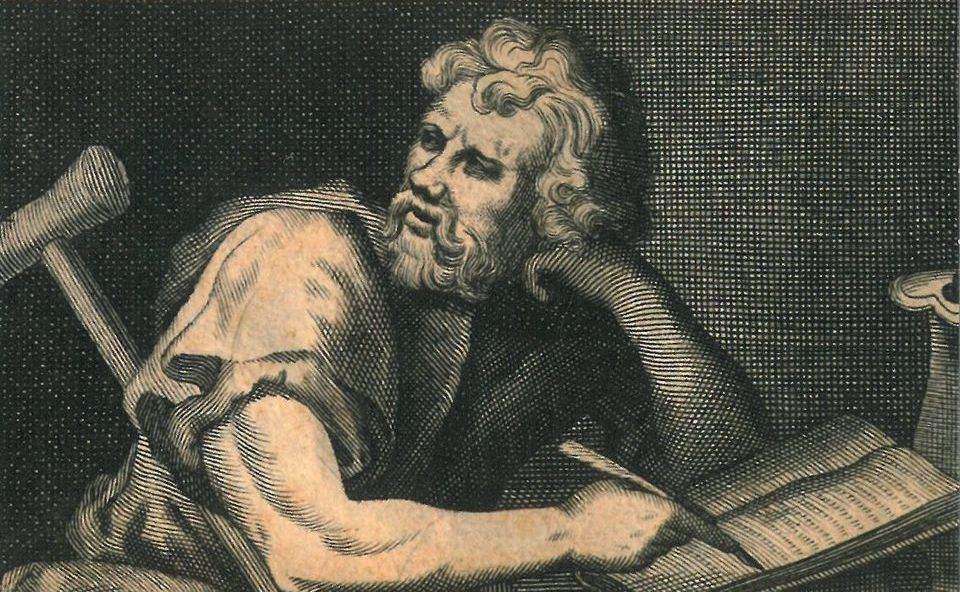

A propos d'Epictète
Epictète est un philosophe de l'antiquité grecque appartenant à l'école stoïcienne. Ancien escalve, il a ensuite fondé sa propre école pour y enseigner le stoïcisme. Un de ses étudiants, Arien, a compilé les notes qu'il avait prises pour en faire un receuil : "Entretiens". Il en a fait un résumé qui s'appelle le "Manuel". C'est une des sources qui inspira l'empereur romain Marc Aurèle.
Portrait d'Epictète
Epictète et les stoïciens
- Il était esclave
- Il a été émancipé et a été l'élève de Musonius Rufus
- Il a fondé sa propore école de philosophie
- Ses écrits ont inspiré l'empereur romain Marc Aurèle
Autres courants philosophiques
D'autres courants philosophiques faisaient concurrence au stoïcisme. En voici les principaux :